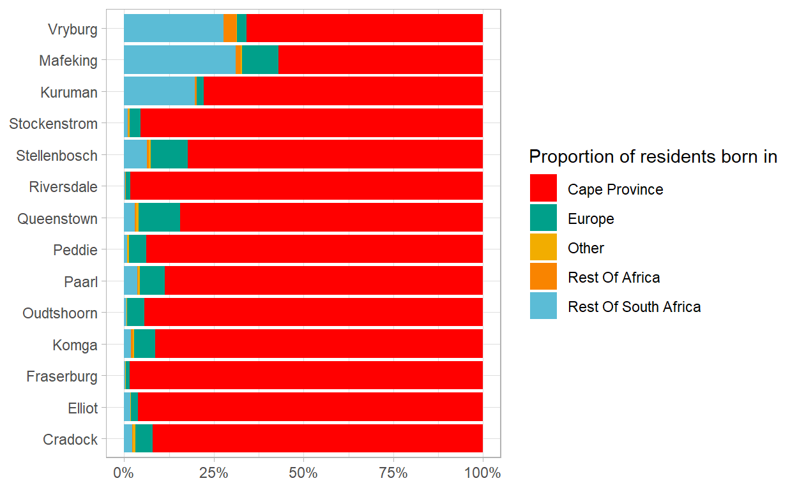

The 1918 Spanish flu pandemic in South Africa: assesing mortality
Abstract
This paper looks at mortality during the Spanish flu pandemic of 1918 in 15 districts in the Cape Province of South Africa.
40,000 death notices.
Introduction
I assess excess mortality using three different methods to quantify how many people died in each district.
Then I look at three measures of pre-pandemic health and how these correlate with excess mortality.
Historical background
Importance of initial exposure
Findings in other literature
Data
Forms of Information of a Death. As of Act No. 7 of 1894 of the Cape Colony.
“N.B. – If the certificate of a Medical Practitioner is produced, the causes of Death and Duration of Illness must be recorded in the Registration Book by the Deputy Registrar and Assistant to the Deputy Registrar as stated in such Certificate, which is to be attached to the form.”
How many died during the pandemic?
Figure 1 shows a heatmap of the deaths.
Show code
df %>%
filter(between(death_date, ymd("1915-01-01"), ymd("1920-12-30"))) %>%
mutate(death_date = floor_date(death_date, unit = "week")) %>%
count(death_date, town) %>%
pivot_wider(names_from = "town", values_from = "n", values_fill = 0) %>%
pivot_longer(-death_date, names_to = "town", values_to = "n") %>%
mutate(town = fct_reorder(town, n)) %>%
ggplot(aes(death_date, town, fill = n)) +
geom_tile() +
scale_fill_viridis_c(trans = "sqrt") +
labs(
x = NULL,
y = NULL,
fill = "Number of deaths per week"
) +
theme(legend.position = "bottom") +
guides(fill = guide_colourbar(
barwidth = 30, barheight = .5,
title.position = "top",
title.hjust = .5
))

Figure 1: Heatmap of deaths per week
There is considerable variation in the crude death rate by district over time, as shown in Figure 2. Here we can see two important features of the pandemic in our sample of Cape districts. First, the pandemic arrived in different districts at different times. In districts close to Cape Town, where the soldiers arrived soon after they were released from quarantine at port.
[Cite Philips here with the history of the arrival of the ships from Freetown]
Show code
df %>%
filter(between(death_date, ymd("1918-09-01"), ymd("1918-12-30"))) %>%
mutate(death_date = floor_date(death_date, unit = "days")) %>%
count(death_date, town) %>%
pivot_wider(names_from = "town", values_from = "n", values_fill = 0) %>%
pivot_longer(-death_date, names_to = "town", values_to = "n") %>%
inner_join(df %>%
filter(between(death_date, ymd("1918-09-01"), ymd("1919-08-30"))) %>%
mutate(death_date = floor_date(death_date, unit = "3 days")) %>%
count(death_date, town) %>%
group_by(town) %>%
slice_max(n, n = 1) %>%
ungroup() %>%
arrange(death_date) %>%
select(town) %>%
mutate(row_num = row_number())) %>%
mutate(town = fct_reorder(town, row_num, .desc = T)) %>%
ggplot(aes(x = death_date, y = town, height = n, fill = town, group = town)) +
geom_density_ridges(
stat = "identity", show.legend = F,
alpha = .8
) +
scale_fill_manual(values = wesanderson::wes_palette("Zissou1", 15, type = "continuous")) +
labs(
x = "Date of death",
y = NULL
)

Figure 2: Ridge plot of number of deaths in district by date
What were the mortality rates in each district?
Candidate methods for assessing (excess) mortality.
A great benefit of the dataset at hand is the recording of a cause of death on the notice. This was either copied from the Certificate of the Medical Practitioner, or in the absence of such a certificate, told to the registrar by the informant. Hence, the most intuitive method to assess how many people died in each district of the Spanish flu is simply to count the number of deaths recorded with “Spanish flu” listed in the cause of death column. However, there are a number of drawbacks to this method.
- Doctors and families who reported to the registrar the cause of death may not have known that the deaths at the beginning of the pandemic were due to the Spanish flu as news of the disease likely travelled across the country slower than the disease itself.
- There is likely some selection into the provision of a cause of death by location within a district. The Form of Information of a Death states that “Medical Certificates are essential in Urban Areas,” while in “Rural Areas Informants can report in three ways – one being under declaration” (find correct citation for death notice).
- There are discrepancies in the reporting of the disease by district. Contrast for instance the labelling of deaths in Cradock and Paarl. In the top facet of Figure 3, it is evident that the vast majority of deaths during the pandemic are labelled as Spanish flu deaths. In contrast, fewer than half of the deaths that occurred during the pandemic are labelled as Spanish flu deaths in Paarl.
- To avoid this complication is is tempting to simply count the number of deaths in each district during the pandemic period and conclude that these were caused by the flu. However, districts of different population sizes would have expected different numbers of deaths in the absence of the pandemic. Hence it is not advisable to conclude that all recorded deaths were due to the flu.
Show code
df %>%
filter(between(death_date, ymd("1918-09-01"), ymd("1919-01-01")),
town %in% c("Cradock", "Paarl")) %>%
mutate(death_date = floor_date(death_date, unit = "week"),
causes_of_death = str_to_lower(causes_of_death)) %>%
mutate(spanish = str_detect(causes_of_death, "spanish"),
spanish = ifelse(spanish == TRUE, "Cause of death labelled 'Spanish flu'", "Other cause of death")) %>%
count(death_date, spanish, town) %>%
pivot_wider(names_from = "spanish", values_from = "n", values_fill = 0) %>%
pivot_longer(-c(death_date, town)) %>%
filter(name != "NA") %>%
ggplot(aes(death_date, value, fill = name)) +
geom_area() +
scale_fill_manual(values = wesanderson::wes_palette("Zissou1", 2, type = "continuous"),
guide = guide_legend(reverse = T)) +
facet_wrap(~ town, nrow = 2) +
theme(legend.position = "bottom") +
labs(x = NULL,
y = "Number of deaths per week",
fill = NULL)
Figure 3: Density plot comparing causes of death during the pandemic in Cradock and Paarl
Table 1 evidences that the majority of deaths in Paarl were labelled simply as “Influenza.”
Show code
df %>%
filter(
between(death_date, ymd("1918-09-01"), ymd("1919-01-01")),
town %in% c("Cradock", "Paarl")
) %>%
count(causes_of_death, town, sort = T) %>%
group_by(town) %>%
slice_max(n, n = 12, with_ties = F) %>%
ungroup() %>%
select(Cradock = causes_of_death, n_cradock = n) %>%
head(12) %>%
bind_cols(df %>%
filter(
between(death_date, ymd("1918-09-01"), ymd("1919-01-01")),
town %in% c("Cradock", "Paarl")
) %>%
count(causes_of_death, town, sort = T) %>%
group_by(town) %>%
slice_max(n, n = 12) %>%
ungroup() %>%
select(Paarl = causes_of_death, n_paarl = n) %>%
tail(12)) %>%
knitr::kable(caption = "Comparison of common causes of death in Cradock and Paarl during the pandemic")
| Cradock | n_cradock | Paarl | n_paarl |
|---|---|---|---|
| Spanish Influenza | 444 | Influenza | 367 |
| Flu | 21 | Spanish Influenza | 247 |
| Influenza | 20 | Pneumonia | 35 |
| Bronchitis | 10 | Spanish Influenza, Pneumonia | 17 |
| Broncho Pneumonia | 7 | Convulsions | 16 |
| Convulsions | 6 | Spaanse Griep | 15 |
| Teething | 5 | Spanish Influenza (Pneumonia) | 15 |
| Diarrhoea | 3 | Bronchitis | 14 |
| Old age | 3 | Broncho Pneumonia | 13 |
| Consumption | 2 | Gastro Enteritis | 12 |
| Inflammation of lungs | 2 | Spanish Flu | 12 |
| Pneumonia | 2 | A) Spanish Influenza B) Pneumonia | 11 |
An alternate set of methods for quantifying excess mortality use history as a guide for the number of deaths that we can expect to occur in each district. These use the mortality figures for three years preceding the pandemic as a guide, looking at the average number of deaths in each district during the pandemic peak (October, November and December), taking an average of the whole year mortality in each district, and creating regression models with the historical data to predict the expected number of deaths in the pandemic period. I explain each below.
First, making use of the death notices from 1915 to 1917 and following the methodology laid out by the South Africa Medical Research Council in Dorrington et al. (2021), I calculate the average number of deaths per month in each town during the pandemic period in the three preceding years as a baseline. The SAMRC define excess mortality is calculated as “the number of all-cause deaths in the last week less the number that might have been expected to have occurred” (Dorrington et al. 2021, 2).
I then subtract this expected number of deaths from the observed number during the pandemic to calculate excess mortality.
The advantage of this method is that it captures the seasonal variation in
Problems: data too coarse to get reasonable estimates at district-week level. aggregate to district-month level.
Show code
df %>%
filter(sf_indicator ==1) %>%
mutate(death_date = floor_date(death_date, "week")) %>%
count(death_date) %>%
mutate(year = year(death_date),
week = week(death_date)) %>%
filter(year != 1918,
year > 1914) %>%
ggplot(aes(week, n, colour = factor(year), group = year)) +
geom_point() +
geom_line() +
geom_vline(xintercept = c(40, 44), lty = 2) +
geom_smooth(aes(group = 1)) +
expand_limits(y = 0) +
scale_color_manual(values = wesanderson::wes_palette(5, name = "Zissou1", type = "continuous")) +
labs(x = "Week of the year",
y = "Number of deaths per week",
colour = "Year")
Figure 4: Mortality by week across districts - excluding 1918
Second, I calculate a simple average of the number of deaths per year in each district in the three prior years. Table 2 shows the mortality by district from 1915 to 1917, and the average across these three years.
Show code
df %>%
filter(death_date < ymd("1918-01-01")) %>%
mutate(year = year(death_date)) %>%
count(town, year) %>%
group_by(town) %>%
mutate(average = mean(n)) %>%
ungroup() %>%
pivot_wider(names_from = "year", values_from = "n") %>%
relocate(average, .after = `1917`) %>%
mutate(across(-town, ~ round(., 0))) %>%
arrange(desc(average)) %>%
knitr::kable(caption = "Mortality by district in years preceding pandemic",
col.names = c("District", "1915", "1916", "1917", "Average"))
| District | 1915 | 1916 | 1917 | Average |
|---|---|---|---|---|
| Queenstown | 843 | 1083 | 849 | 925 |
| Oudtshoorn | 816 | 768 | 1019 | 868 |
| Paarl | 731 | 715 | 755 | 734 |
| Stellenbosch | 503 | 556 | 604 | 554 |
| Cradock | 378 | 400 | 382 | 387 |
| Mafeking | 344 | 382 | 344 | 357 |
| Stockenstrom | 264 | 331 | 335 | 310 |
| Komga | 241 | 338 | 301 | 293 |
| Peddie | 266 | 264 | 270 | 267 |
| Fraserburg | 244 | 230 | 192 | 222 |
| Kuruman | 182 | 247 | 194 | 208 |
| Riversdale | 199 | 203 | 204 | 202 |
| Vryburg | 198 | 214 | 187 | 200 |
| Elliot | 97 | 143 | 104 | 115 |
| Sea Point | 19 | 43 | 70 | 44 |
Show code
df %>%
mutate(year = year(death_date)) %>%
count(year, town) %>%
filter(year == 1918) %>%
rename(deaths_1918 = n) %>%
inner_join(
df %>%
mutate(year = year(death_date)) %>%
count(year, town) %>%
filter(year <= 1917) %>%
group_by(town) %>%
summarise(avg_deaths_1915_1917 = mean(n))
) %>%
select(-year) %>%
mutate(town = fct_reorder(town, deaths_1918)) %>%
pivot_longer(-town, names_to = "type", values_to = "deaths") %>%
mutate(type = case_when(
str_detect(type, "deaths_1918") ~ "Mortality in 1918",
TRUE ~ "Mean motality between 1915 and 1917"
)) %>%
ggplot(aes(deaths, town)) +
geom_line(aes(group = town)) +
geom_point(aes(colour = type)) +
scale_x_continuous(labels = scales::number_format()) +
theme(legend.position = "bottom") +
labs(
colour = NULL,
caption = "Length of line represents absolute excess mortality",
y = NULL,
x = "Mortality"
)

Third, I use regression models to extrapolate the mortality we would expect in each district if the historical trends from 1915 to 1917 continued.
I use three regression models. These are linear model with only an intercept - in effect the same as the averaging procedure from above, but over a shorter window. Specifically, I average the number of deaths in the three month period including October, November and December in the three years prior to 1918 as a guide for the average number of deaths per district. This accounts for the seasonality shown in Figure 4, whereby there are a greater number of deaths in the second half of the year.
Next I use a simple linear regression. This accounts, for instance, for population growth and consequent linear increases in the number of registered deaths per district per year.
Further I use a regression model from Serfling that accounts for the seasonality of respiratory diseases like flu and influenza. “Serfling’s method uses cyclic regression to model the weekly proportion of deaths from pneumonia and influenza and to define an epidemic threshold that is adjusted for seasonal effects.” (Cowling et al. 2006, 4).
Show code
df_reg <- df %>%
mutate(date = floor_date(death_date, "week")) %>%
count(date, town) %>%
filter(date <= ymd("1918-01-01")) %>%
nest(data = c(date, n)) %>%
mutate(
lm_fit = map(data, ~ lm(n ~ date, data = .x)),
q_fit = map(data, ~ lm(n ~ poly(date, 2), data = .x))
) %>%
inner_join(
df %>%
mutate(date = floor_date(death_date, "week")) %>%
count(date, town) %>%
filter(date >= ymd("1918-01-01")) %>%
nest(post_data = c(date, n))
) %>%
mutate(
augmented_lm = map2(lm_fit, post_data, ~ augment(.x, newdata = .y)),
augmented_q = map2(q_fit, post_data, ~ augment(.x, newdata = .y))
) %>%
unnest(augmented_lm, augmented_q) %>%
filter(between(date, ymd("1918-01-01"), ymd("1918-12-31"))) %>%
select(town, date, n, .fitted, .fitted1) %>%
rename(
linear_trend = .fitted,
seasonal_trend = .fitted1,
observed = n
) %>%
group_by(town) %>%
mutate(across(observed:seasonal_trend, .fns = sum)) %>%
ungroup() %>%
distinct(town, observed, linear_trend) %>%
inner_join(df %>%
mutate(death_date = floor_date(death_date, "month")) %>%
count(death_date, town) %>%
filter(death_date < ymd("1918-09-01")) %>%
group_by(town) %>%
summarise(mean_deaths = mean(n),
n =) %>%
ungroup() %>%
mutate(mean_deaths = 12 * mean_deaths)) %>%
inner_join(df %>%
filter(between(death_date, ymd("1915-10-01"), ymd("1915-12-31"))) %>%
group_by(town) %>%
count() %>%
ungroup() %>%
mutate(n_1915 = n*3) %>%
select(-n) %>%
inner_join(df %>%
filter(between(death_date, ymd("1916-10-01"), ymd("1916-12-31"))) %>%
group_by(town) %>%
count() %>%
ungroup() %>%
mutate(n_1916 = n*3) %>%
select(-n)) %>%
inner_join(df %>%
filter(between(death_date, ymd("1917-10-01"), ymd("1917-12-31"))) %>%
group_by(town) %>%
count() %>%
ungroup() %>%
mutate(n_1917 = n*3) %>%
select(-n)) %>%
pivot_longer(-town) %>%
group_by(town) %>%
mutate(across(value, .fns = mean)) %>%
ungroup() %>%
distinct(town, value) %>%
rename(mean_deaths_oct_dec = value)) %>%
mutate(town = fct_reorder(town, observed)) %>%
pivot_longer(-c(town, observed), names_to = "type", values_to = "n") %>%
mutate(type = case_when(
str_detect(type, "linear") ~ "Linear trend in deaths per month",
str_detect(type, "mean_deaths_oct_dec") ~ "Average number of deaths per month (Oct-Dec)",
TRUE ~ "Average number of deaths per month"
)) %>%
group_by(town) %>%
mutate(mean_projected_deaths = mean(n)) %>%
ungroup()
df_reg %>%
ggplot(aes(n, town)) +
geom_line(aes(group = town, colour = "Estimate range from regression models")) +
geom_point(aes(observed, town, shape = "Observed pandemic mortality")) +
geom_point(aes(mean_projected_deaths, town, shape = "Mean projected mortality")) +
scale_color_manual(values = "grey50") +
guides(color = guide_legend(order = 2),
shape = guide_legend(order = 1)) +
labs(
x = "Mortality",
colour = NULL,
shape = NULL,
y = NULL
)

Show code
df_reg %>%
distinct(town, observed, mean_projected_deaths) %>%
mutate(excess_mortality = observed - mean_projected_deaths,
across(where(is.numeric), .fns = round)) %>%
arrange(desc(excess_mortality)) %>%
# mutate(across(where(is.numeric), .fns = ~ number_format(.x, ))) %>%
knitr::kable(col.names = c("District", "Observed", "Projected", "Excess"),
caption = "Observed, predicted and excess mortality based on regression methods")
| District | Observed | Projected | Excess |
|---|---|---|---|
| Queenstown | 1693 | 886 | 807 |
| Paarl | 1465 | 675 | 790 |
| Peddie | 1048 | 259 | 789 |
| Stockenstrom | 946 | 325 | 621 |
| Stellenbosch | 1170 | 550 | 620 |
| Komga | 827 | 283 | 544 |
| Oudtshoorn | 1410 | 910 | 500 |
| Mafeking | 781 | 332 | 449 |
| Elliot | 527 | 112 | 415 |
| Cradock | 763 | 364 | 399 |
| Vryburg | 455 | 191 | 264 |
| Kuruman | 427 | 220 | 207 |
| Fraserburg | 264 | 178 | 86 |
| Riversdale | 214 | 189 | 25 |
| Sea Point | 54 | 51 | 3 |
Conclusion of excess mortalty calculations is to use all respiratory deaths during pandemic as pandemic deaths - more reliable than lsicing data in preceding years thinly - due to data coarsity.
A possible choice at this point would be to classify any death occurring during the pandemic with respiratory disease such as pneumonia or influenza listed in the cause of death as a Spanish flu death. [To be completed: In the appendix I show that this can be done effectively with a machine learning model and a relatively small set of hand-labelled training data.]
Show code
# show figure from presentation that has Phillips numbers compared to our own.
Timing and the absence of subsequent waves
This speaks to the severity of the pandemic. Caveat, Komgha and Oudtshoorn.
Correlates
Pre-existing health
A wealth of literature has shown that there is a strong correlation between the level of health and prevalence of illnesses in different communities and their outcomes facing a pandemic.
I examine two measures of pre-existing health in the 15 districts which constitute the sample. The first uses infant and child mortality statistics as a proxy for the level of existing health and healthcare in a district. The second assess mortality from influenza and pneumonia prior to the pandemic to gauge levels of health in different communities.
Pre-pandemic infant and child mortality rates
We start with infant mortality rates. Defined as the share of children below 1 dying each year divided by the number of births each year.
Two sources of data: - infant deaths from our death notices in each district. Taken from 1915 - 1917. - infant births - record from blue books/archive… (CITAION). Multiply the snapshot by three to get an average mortality rate prior to the pandemic and make the most of the data at our disposal.
Infant mortality: deaths of those below children born in each town.
Show code
births_by_town <- read_rds("data/births_by_town.rds")
df_infant <- births_by_town %>%
select(-total) %>%
pivot_longer(-town, names_to = "race", values_to = "births") %>%
mutate(race = str_to_title(race)) %>%
mutate(births = ifelse(births == 0, 1, births)) %>%
# for the three years
mutate(births = 3*births) %>%
inner_join(df %>%
filter(
death_date < ymd("1918-01-01"),
age_years <= 1,
race != "NA"
) %>%
count(town, race) %>%
rename(deaths = n), by = c("town", "race")) %>%
mutate(infant_mort_rate = deaths/births,
low = qbeta(.025, deaths + .5, births - deaths + .5),
high = qbeta(.975, deaths + .5, births - deaths + .5)) %>%
filter(births > 5)
df_infant %>%
group_by(town) %>%
mutate(births_grouped = sum(births, na.rm = T),
deaths_grouped = sum(deaths, na.rm = T)) %>%
ungroup() %>%
mutate(infant_mort_rate_grouped = deaths_grouped / births_grouped) %>%
select(town, race, infant_mort_rate, infant_mort_rate_grouped) %>%
pivot_wider(names_from = "race", values_from = "infant_mort_rate") %>%
mutate(across(where(is.numeric), .fns = ~ .x*1000),
across(where(is.numeric), .fns = round)) %>%
arrange(desc(infant_mort_rate_grouped)) %>%
knitr::kable(col.names = c("District", "Aggregate", "White", "Black", "Coloured"),
caption = "Infant mortality by race")
| District | Aggregate | White | Black | Coloured |
|---|---|---|---|---|
| Stockenstrom | 346 | 130 | 448 | 221 |
| Queenstown | 313 | 76 | 425 | NA |
| Cradock | 286 | 92 | 450 | 320 |
| Elliot | 257 | 90 | 574 | NA |
| Oudtshoorn | 225 | 106 | NA | 320 |
| Stellenbosch | 210 | 111 | NA | 243 |
| Paarl | 203 | 69 | NA | 239 |
| Mafeking | 190 | 96 | 223 | NA |
| Fraserburg | 178 | 85 | NA | 293 |
| Komga | 169 | 48 | 180 | NA |
| Riversdale | 156 | 91 | NA | 220 |
| Peddie | 144 | NA | 144 | NA |
| Kuruman | 132 | 66 | 165 | 204 |
| Vryburg | 75 | 49 | 159 | 32 |
| Sea Point | 17 | 11 | NA | 52 |
Show code
df_infant %>%
mutate(town = reorder_within(town, infant_mort_rate, race)) %>%
ggplot(aes(infant_mort_rate, town, colour = race)) +
geom_point() +
geom_errorbarh(aes(xmin = low, xmax = high)) +
scale_y_reordered() +
scale_x_continuous(labels = number_format(scale = 1000)) +
scale_color_manual(values = wesanderson::wes_palette(3, name = "Zissou1", type = "continuous")) +
theme(legend.position = "none") +
facet_wrap(~ race, nrow = 3, scales = "free_y") +
labs(x = "Infant mortality per 1000 recorded births",
y = NULL)

Now we know what the pre-existing infant mortality data looked like, we can examine how it was correlated with the pandemic mortality.
Show code
infant_mortality <- read_rds("data/infant_mortality.rds")
infant_mortality %>%
filter(births > 5) %>%
ggplot(aes(infant_mort_rate, mort_rate)) +
geom_point(aes(size = total, colour = race)) +
geom_smooth(method = "lm", se = F, aes(colour = "Both groups")) +
geom_smooth(aes(colour = race), method = "lm", se = F) +
scale_x_continuous(labels = number_format(scale = 1000)) +
scale_y_continuous(labels = number_format(scale = 1000)) +
scale_color_manual(values = wesanderson::wes_palette(3, name = "Zissou1", type = "continuous")) +
labs(x = "Child mortality rate",
y = "Pandemic mortality rate",
size = "District population",
colour = "Race group")

[Conclude here]
Child mortality
Child mortality as a measure of pre-existing health in the different districts.
- Defined as the number of deaths in our death notice dataset, divided by the number of children below 5 years of age from census data. The denominator for white individuals is from the 1918 census, while for Black and Coloured individuals is from the 1911 census.
Show code
child_mortality <- read_rds("data/child_mortality.rds")
child_mortality %>%
mutate(town = reorder_within(town, child_mort_rate, race)) %>%
ggplot(aes(child_mort_rate, town, colour = race)) +
geom_point() +
geom_errorbarh(aes(xmin = low, xmax = high)) +
scale_y_reordered() +
facet_wrap(~ race, nrow = 2, scales = "free_y") +
scale_x_continuous(labels = number_format(scale = 1000)) +
scale_color_manual(values = wesanderson::wes_palette(2, name = "Zissou1", type = "continuous")) +
theme(legend.position = "none") +
labs(x = "Child mortality per 1000 children",
y = NULL)

Show code
child_mortality %>%
group_by(town) %>%
mutate(n_under_5_t = sum(n_under_5),
deaths_t = sum(deaths),
child_mort_rate_t =deaths_t / n_under_5_t) %>%
ungroup() %>%
select(town, race, child_mort_rate, child_mort_rate_t) %>%
pivot_wider(names_from = "race", values_from = "child_mort_rate") %>%
mutate(across(where(is.numeric), .fns = ~ round(.x * 1000, digits = 0))) %>%
arrange(child_mort_rate_t) %>%
knitr::kable(col.names = c("District", "Aggregate", "White", "Black and Coloured"),
caption = "Child mortality per 1000 recorded births")
| District | Aggregate | White | Black and Coloured |
|---|---|---|---|
| Vryburg | 67 | 79 | 65 |
| Peddie | 73 | 50 | 74 |
| Kuruman | 81 | 61 | 86 |
| Elliot | 110 | 47 | 159 |
| Mafeking | 118 | 126 | 117 |
| Riversdale | 127 | 62 | 215 |
| Komga | 160 | 42 | 174 |
| Fraserburg | 175 | 81 | 291 |
| Cradock | 180 | 62 | 232 |
| Queenstown | 216 | 77 | 247 |
| Oudtshoorn | 243 | 93 | 391 |
| Paarl | 263 | 64 | 343 |
| Stellenbosch | 270 | 108 | 340 |
| Stockenstrom | 279 | 90 | 318 |
Now we can compare these mortality statistics during the pandemic
Show code
child_mortality %>%
ggplot(aes(child_mort_rate, mort_rate)) +
geom_point(aes(size = total, colour = race)) +
geom_smooth(method = "lm", se = F, aes(colour = "Both groups")) +
geom_smooth(aes(colour = race), method = "lm", se = F) +
scale_x_continuous(labels = number_format(scale = 1000)) +
scale_y_continuous(labels = number_format(scale = 1000)) +
scale_color_manual(values = wesanderson::wes_palette(3, name = "Zissou1", type = "continuous")) +
labs(x = "Child mortality rate",
y = "Pandemic mortality rate",
size = "District population",
colour = "Race group")

Show code
# lm_1 <- child_mortality %>%
# lm(mort_rate ~ child_mort_rate, data = .)
#
# lm_2 <- child_mortality %>%
# lm(mort_rate ~ child_mort_rate + race, data = .)
#
# stargazer::stargazer(lm_1, lm_2, type = "html")
| Dependent variable: | ||
| mort_rate | ||
| (1) | (2) | |
| child_mort_rate | 0.132*** | 0.066* |
| (0.030) | (0.038) | |
| raceWhite | -0.020** | |
| (0.008) | ||
| Constant | 0.008 | 0.028*** |
| (0.005) | (0.009) | |
| Observations | 28 | 28 |
| R2 | 0.425 | 0.544 |
| Adjusted R2 | 0.403 | 0.508 |
| Residual Std. Error | 0.017 (df = 26) | 0.015 (df = 25) |
| F Statistic | 19.243*** (df = 1; 26) | 14.919*** (df = 2; 25) |
| Note: | p<0.1; p<0.05; p<0.01 | |
Pre-pandemic pneumonia and influenza mortality
Acuña-Soto, Viboud, and Chowell (2011) show how influenza and pneumonia mortality prior to the pandemic are predictive of mortality rates during the pandemic in 66 large cities in the United States.
I follow their process here:
First I calculate the pre-pandemic mortality rates by district for influenza, pneumonia and both. These are shown in Table [cite] below.
Show code
pneumonia_influenza <- read_rds("data/pneumonia_influenza.rds")
pneumonia_influenza %>%
group_by(town) %>%
mutate(influenza_deaths_grouped = sum(influenza_deaths, na.rm = T),
pneumonia_deaths_grouped = sum(pneumonia_deaths, na.rm = T),
pneumonia_influenza_deahts_grouped = sum(pneumonia_influenza_deaths, na.rm = T),
total_grouped = sum(total, na.rm = T)) %>%
mutate(across(c(influenza_deaths_grouped, pneumonia_deaths_grouped, pneumonia_influenza_deahts_grouped), .fns = ~.x*3 / total_grouped)) %>%
ungroup() %>%
mutate(across(where(is.numeric), ~ round(.x*1000, 2))) %>%
distinct(town, .keep_all = T) %>%
arrange(pneumonia_influenza_deahts_grouped) %>%
select(town, influenza_deaths_grouped, pneumonia_deaths_grouped, pneumonia_influenza_deahts_grouped) %>%
knitr::kable(col.names = c("District", "Influenza", "Pneumonia", "Influenza and Pneumonia"),
caption = "Influenza and Pneumonia mortality per 1000 residents")
| District | Influenza | Pneumonia | Influenza and Pneumonia |
|---|---|---|---|
| Kuruman | 4.28 | 4.28 | 8.56 |
| Riversdale | 3.18 | 5.76 | 8.94 |
| Vryburg | 4.30 | 9.02 | 13.32 |
| Peddie | 8.37 | 5.89 | 14.10 |
| Mafeking | 0.49 | 14.77 | 15.26 |
| Elliot | 7.28 | 11.79 | 18.72 |
| Fraserburg | 5.21 | 20.85 | 26.06 |
| Cradock | 2.31 | 23.84 | 26.15 |
| Paarl | 0.79 | 27.82 | 28.61 |
| Stellenbosch | 3.29 | 32.05 | 35.07 |
| Queenstown | 8.02 | 29.17 | 37.02 |
| Oudtshoorn | 1.95 | 42.89 | 44.59 |
| Komga | 28.62 | 16.88 | 45.31 |
| Stockenstrom | 22.65 | 75.60 | 98.25 |
Show code
pneumonia_influenza_mort <- read_rds("data/pneumonia_infleunza_mort.rds")
pneumonia_influenza_mort %>%
ggplot(aes(pneumonia_influenza_mort, pandemic_mort_rate)) +
geom_point(aes(colour = race, size = total_pop)) +
geom_smooth(method = "lm", aes(colour = race), se = F) +
geom_smooth(method = "lm", aes(colour = "Both groups"), se = F) +
scale_x_continuous(labels = number_format(scale = 1000)) +
scale_y_continuous(labels = number_format(scale = 1000)) +
# theme(legend.position = "bottom") +
scale_color_manual(values = wesanderson::wes_palette(3, name = "Zissou1", type = "continuous")) +
labs(
x = "Pre-existing district level pneumonia and infleunza mortality",
y = "Pandemic mortality",
caption = "Note: mortality is measured as deaths per 1000 residents",
colour = "Race group",
size = "District population"
)
While the individual slopes are lower, there is still a strong correlation between pre-existing pneumonia and influenza mortality rates and the pandemic mortality rate in each district.
Show code
lm_1 <- read_rds("data/influenza_mort.rds") %>%
lm(pandemic_mort_rate ~ influenza_mort + race, data = .)
lm_2 <- read_rds("data/pneumonia_mort.rds") %>%
lm(pandemic_mort_rate ~ pneumonia_mort + race, data = .)
lm_3 <- pneumonia_influenza_mort %>%
lm(pandemic_mort_rate ~ pneumonia_influenza_mort + race, data = .)
# stargazer::stargazer(lm_1, lm_2, lm_3, type = "html")
| Dependent variable: | |||
| pandemic_mort_rate | |||
| (1) | (2) | (3) | |
| influenza_mort | 3.228** | ||
| (1.437) | |||
| pneumonia_mort | 1.370** | ||
| (0.511) | |||
| pneumonia_influenza_mort | 1.481*** | ||
| (0.431) | |||
| raceWhite | -0.023*** | -0.019*** | -0.015** |
| (0.007) | (0.007) | (0.007) | |
| Constant | 0.033*** | 0.029*** | 0.023*** |
| (0.006) | (0.006) | (0.007) | |
| Observations | 26 | 28 | 28 |
| R2 | 0.567 | 0.602 | 0.652 |
| Adjusted R2 | 0.530 | 0.571 | 0.624 |
| Residual Std. Error | 0.015 (df = 23) | 0.014 (df = 25) | 0.013 (df = 25) |
| F Statistic | 15.075*** (df = 2; 23) | 18.945*** (df = 2; 25) | 23.435*** (df = 2; 25) |
| Note: | p<0.1; p<0.05; p<0.01 | ||
Literacy proxy
I use a proxy for literacy of the individual’s family to assess if literacy has an impact on how well residents of a district fare during the pandemic. The hypothesis is that districts with higher literacy rates will better adopt the best practices proposed by health authorities in an attempt to quell the pandemic and stop the spread of the disease.
Table [Cite] shows that there is considerable variation in our literacy proxy by district and race.
Show code
df %>%
filter(death_date < ymd("1918-09-01")) %>%
mutate(signed_yes_or_no = str_to_lower(signed_yes_or_no)) %>%
mutate(literate_proxy = case_when(
str_detect(signed_yes_or_no, "maark|mark|merk|no|x") ~ "No",
str_detect(signed_yes_or_no, "yes") ~ "Yes",
TRUE ~ "No"
)) %>%
filter(!race %in% c(NA, "NA")) %>%
count(race, town, literate_proxy) %>%
pivot_wider(names_from = "literate_proxy", values_from = "n") %>%
mutate(across(c(No, Yes), ~ replace_na(., 0))) %>%
mutate(share_literate = Yes/(Yes + No),
town = fct_reorder(town, share_literate)) %>%
group_by(town) %>%
mutate(aggregate = sum(Yes)/(sum(Yes) + sum(No))) %>%
ungroup() %>%
select(town, race, share_literate, aggregate) %>%
pivot_wider(names_from = "race", values_from = "share_literate") %>%
arrange(desc(aggregate)) %>%
mutate(across(where(is.numeric), .fns = ~ percent(., accuracy = 1))) %>%
knitr::kable(col.names = c("District", "Aggregate", "Black", "Coloured", "White"),
caption = "Percentage of district death notices wherein Informant signed")
| District | Aggregate | Black | Coloured | White |
|---|---|---|---|---|
| Fraserburg | 100% | 100% | 100% | 100% |
| Sea Point | 100% | 100% | 100% | 100% |
| Elliot | 99% | 99% | 100% | 99% |
| Stellenbosch | 49% | 49% | 37% | 96% |
| Paarl | 45% | 46% | 37% | 94% |
| Cradock | 45% | 33% | 36% | 97% |
| Vryburg | 45% | 29% | 30% | 99% |
| Riversdale | 43% | 50% | 15% | 90% |
| Mafeking | 42% | 32% | 51% | 100% |
| Queenstown | 40% | 33% | 30% | 98% |
| Oudtshoorn | 37% | 27% | 21% | 90% |
| Kuruman | 33% | 16% | 36% | 96% |
| Stockenstrom | 17% | 7% | 32% | 93% |
| Komga | 11% | 6% | 14% | 95% |
| Peddie | 9% | 6% | 20% | 97% |
Figure [cite] shows the same thing.
Show code
df %>%
filter(death_date < ymd("1918-09-01")) %>%
mutate(signed_yes_or_no = str_to_lower(signed_yes_or_no)) %>%
mutate(literate_proxy = case_when(
str_detect(signed_yes_or_no, "maark|mark|merk|no|x") ~ "No",
str_detect(signed_yes_or_no, "yes") ~ "Yes",
TRUE ~ "No"
)) %>%
filter(!race %in% c(NA, "NA")) %>%
count(race, town, literate_proxy) %>%
pivot_wider(names_from = "literate_proxy", values_from = "n") %>%
mutate(across(c(No, Yes), ~ replace_na(., 0))) %>%
mutate(share_literate = Yes/(Yes + No),
town = fct_reorder(town, share_literate)) %>%
ggplot(aes(share_literate, town, fill = race)) +
scale_fill_manual(values = wesanderson::wes_palette(3, name = "Darjeeling1")) +
geom_col(position = "dodge") +
facet_wrap( ~ race) +
scale_x_continuous(labels = percent_format())

Is there an association between this proxy and the pandemic mortality rates?
Show code
town_race_mort_rates_pandemic <- read_rds("data/town_race_mort_rates.rds")
df %>%
filter(death_date < ymd("1918-09-01")) %>%
mutate(signed_yes_or_no = str_to_lower(signed_yes_or_no)) %>%
mutate(literate_proxy = case_when(
str_detect(signed_yes_or_no, "maark|mark|merk|no|x") ~ "No",
str_detect(signed_yes_or_no, "yes") ~ "Yes",
TRUE ~ "No"
)) %>%
filter(!race %in% c(NA, "NA")) %>%
count(race, town, literate_proxy) %>%
pivot_wider(names_from = "literate_proxy", values_from = "n") %>%
mutate(across(c(No, Yes), ~ replace_na(., 0))) %>%
mutate(race = case_when(
str_detect(race, "White") ~ "White",
TRUE ~ "Black and Coloured"
)) %>%
group_by(town, race) %>%
mutate(across(c(No, Yes), .fns = sum)) %>%
ungroup() %>%
distinct() %>%
mutate(share_literate = Yes / (Yes + No)) %>%
inner_join(town_race_mort_rates_pandemic) %>%
ggplot(aes(share_literate, mort_rate)) +
geom_point(aes(colour = race, size = total)) +
geom_smooth(method = "lm", aes(colour = race), se = F) +
geom_smooth(method = "lm", aes(colour = "Both groups"), se = F) +
scale_x_continuous(labels = percent_format()) +
scale_y_continuous(labels = number_format(scale = 1000)) +
# need to choose a better colour
scale_color_manual(values = wesanderson::wes_palette(3, name = "Zissou1", type = "continuous")) +
labs(x = "Percentage of population with literacy proxy",
y = "Pandemic mortality per 1000 residents",
size = "District population",
colour = NULL)
We can also test for statistical correlation:
Show code
lm_1 <- df %>%
filter(death_date < ymd("1918-09-01")) %>%
mutate(signed_yes_or_no = str_to_lower(signed_yes_or_no)) %>%
mutate(literate_proxy = case_when(
str_detect(signed_yes_or_no, "maark|mark|merk|no|x") ~ "No",
str_detect(signed_yes_or_no, "yes") ~ "Yes",
TRUE ~ "No"
)) %>%
filter(!race %in% c(NA, "NA")) %>%
count(race, town, literate_proxy) %>%
pivot_wider(names_from = "literate_proxy", values_from = "n") %>%
mutate(across(c(No, Yes), ~ replace_na(., 0))) %>%
mutate(race = case_when(
str_detect(race, "White") ~ "White",
TRUE ~ "Black and Coloured"
)) %>%
group_by(town, race) %>%
mutate(across(c(No, Yes), .fns = sum)) %>%
ungroup() %>%
distinct() %>%
mutate(share_literate = Yes / (Yes + No)) %>%
inner_join(town_race_mort_rates_pandemic) %>%
lm(mort_rate ~ share_literate, data = .)
lm_2 <- df %>%
filter(death_date < ymd("1918-09-01")) %>%
mutate(signed_yes_or_no = str_to_lower(signed_yes_or_no)) %>%
mutate(literate_proxy = case_when(
str_detect(signed_yes_or_no, "maark|mark|merk|no|x") ~ "No",
str_detect(signed_yes_or_no, "yes") ~ "Yes",
TRUE ~ "No"
)) %>%
filter(!race %in% c(NA, "NA")) %>%
count(race, town, literate_proxy) %>%
pivot_wider(names_from = "literate_proxy", values_from = "n") %>%
mutate(across(c(No, Yes), ~ replace_na(., 0))) %>%
mutate(race = case_when(
str_detect(race, "White") ~ "White",
TRUE ~ "Black and Coloured"
)) %>%
group_by(town, race) %>%
mutate(across(c(No, Yes), .fns = sum)) %>%
ungroup() %>%
distinct() %>%
mutate(share_literate = Yes / (Yes + No)) %>%
inner_join(town_race_mort_rates_pandemic) %>%
lm(mort_rate ~ share_literate + race, data = .)
# stargazer::stargazer(lm_1, lm_2, type = "html")
| Dependent variable: | ||
| mort_rate | ||
| (1) | (2) | |
| child_mort_rate | 0.132*** | 0.066* |
| (0.030) | (0.038) | |
| raceWhite | -0.020** | |
| (0.008) | ||
| Constant | 0.008 | 0.028*** |
| (0.005) | (0.009) | |
| Observations | 28 | 28 |
| R2 | 0.425 | 0.544 |
| Adjusted R2 | 0.403 | 0.508 |
| Residual Std. Error | 0.017 (df = 26) | 0.015 (df = 25) |
| F Statistic | 19.243*** (df = 1; 26) | 14.919*** (df = 2; 25) |
| Note: | p<0.1; p<0.05; p<0.01 | |
Here we observe the Yule-Simpson effect in practice, how exciting! This statistical effect occurs when a true effect is marked by failing to control for an additional variable. In this case, the best fit line for “Both groups,” shown in yellow, leads us to believe that as the proportion of our district with the literacy proxy increases, the pandemic mortality decreases, in line with our hypothesis. However, when we control for race, we see that the effect is not significant and the sign is in fact in the opposite direction, as visible in the blue and red lines in the figure.
Percentage of foriegn born individuals and
Show code
birth_place_shares <- read_rds("data/birth_place_shares.rds")
birth_place_shares %>%
mutate(town = fct_reorder(town, share_not_cape)) %>%
# select(-contains("share"), -grand_total) %>%
rename_with( ~ str_remove(.x, "total_"), contains("total_")) %>%
pivot_longer(c(cape, sa, africa, europe, other), values_to = "n", names_to = "region") %>%
mutate(region = case_when(
str_detect(region, "cape") ~ "Cape Province",
str_detect(region, "sa") ~ "Rest of South Africa",
str_detect(region, "africa") ~ "Rest of Africa",
TRUE ~ region
)) %>%
mutate(region = str_to_title(region)) %>%
ggplot(aes(n, town, fill = region)) +
geom_col(position = "fill") +
scale_x_continuous(labels = percent) +
scale_fill_manual(values = wesanderson::wes_palette("Darjeeling1")) +
labs(fill = "Proportion of residents born in",
x = NULL,
y = NULL)

Visual correlation.
Show code
birth_place_shares %>%
group_by(town) %>%
mutate(pandemic_mort_grouped = sum(deaths) / sum(total_pop)) %>%
ungroup() %>%
distinct(town, pandemic_mort_grouped, share_not_cape, grand_total) %>%
ggplot(aes(share_not_cape, pandemic_mort_grouped)) +
geom_point(aes(size = grand_total), colour = "midnightblue") +
scale_x_continuous(labels = percent_format(accuracy = 1)) +
scale_y_continuous(labels = number_format(scale = 1000)) +
geom_smooth(method = "lm") +
labs(x = "Share of residents born outside the Cape Province",
y = "Pandemic mortality per 1000 residents",
size = "District population")

Statistical correlation
Show code
lm_1 <- birth_place_shares %>%
lm(pandemic_mort_rate ~ share_not_cape, data = .)
# stargazer::stargazer(lm_1, type = "html")
| Dependent variable: | |
| pandemic_mort_rate | |
| share_not_cape | -0.032 |
| (0.034) | |
| Constant | 0.032*** |
| (0.006) | |
| Observations | 28 |
| R2 | 0.032 |
| Adjusted R2 | -0.005 |
| Residual Std. Error | 0.022 (df = 26) |
| F Statistic | 0.869 (df = 1; 26) |
| Note: | p<0.1; p<0.05; p<0.01 |